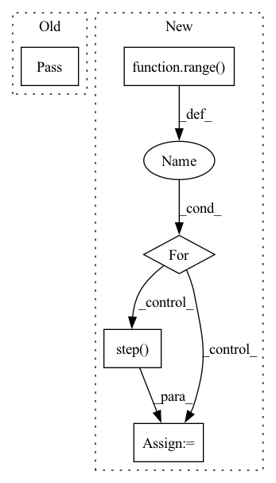

Pattern ID :37275
Before Change
return grad
def fit(self, data: TensorType["num_obs", "obs_dim"] = None):
pass
def grad_step(
self, x_curr: TensorType["num_obs", "obs_dim"]
) -> TensorType["num_obs", "obs_dim"]:After Change
def fit(self) -> TensorType["num_obs", "obs_dim"]:
// TODO: test that the recurrence is fine
x_curr = self.optimized_preds.clone()
for i in tqdm(range( self.max_iter) ):
x_new = self.step( x_curr)
if self.verbose:
print(f"iteration {i}")
print(f"x_curr: {x_curr}")
print(f"x_new: {x_new}")In pattern: SUPERPATTERN
Frequency: 3
Non-data size: 5
Instances Fragment ID: 107342964
Project Name: danbider/lightning-pose
Commit Name: 588fc9e90d46e2d92c8baaff98cde06934f584fc
Time: 2022-03-31
Author:
File Name: lightning_pose/postprocess/projected_gd.py
M Class Name: ProjectedGD
N Class Name: ProjectedGD
M Method Name: fit(1)
N Method Name: fit(2)
M Parent Class: object
N Parent Class: object
M File Name: lightning_pose/postprocess/projected_gd.py
N File Name: lightning_pose/postprocess/projected_gd.py
M Start Line: 37
M End Line: 38
N Start Line: 75
N End Line: 90
Before Change
// 2-nd option is better
def _gather_rollout(self):
pass
def _write_logs(self, tag, values, step):
for key, value in values.item():
self._writer.add_scalar(tag + key, value, step)After Change
def _gather_rollout(self, observation, rollout_len):
observations, actions, rewards, is_done = [observation], [], [], []
for _ in range( rollout_len) :
action = self._agent.act(observation)
observation, reward, done, _ = self._train_env.step( action)
observations.append(observation)
actions.append(action)
rewards.append(reward) Fragment ID: 107342950
Project Name: cherrypiesexy/imitation_learning
Commit Name: d8afa678e09129d33d70a85dad8a2fe63244aedc
Time: 2020-05-07
Author: dmitry.akimov@giant.ai
File Name: trainers/on_policy.py
M Class Name: OnPolicyTrainer
N Class Name: OnPolicyTrainer
M Method Name: _gather_rollout(3)
N Method Name: _gather_rollout(1)
M Parent Class:
N Parent Class:
M File Name: trainers/on_policy.py
N File Name: trainers/on_policy.py
M Start Line: 22
M End Line: 23
N Start Line: 30
N End Line: 45
Before Change
return grad
def fit(self, data: TensorType["num_obs", "obs_dim"] = None):
pass
def grad_step(
self, x_curr: TensorType["num_obs", "obs_dim"]
) -> TensorType["num_obs", "obs_dim"]:After Change
def fit(self) -> TensorType["num_obs", "obs_dim"]:
// TODO: test that the recurrence is fine
x_curr = self.optimized_preds.clone()
for i in tqdm(range( self.max_iter) ):
x_new = self.step( x_curr)
if self.verbose:
print(f"iteration {i}")
print(f"x_curr: {x_curr}")
print(f"x_new: {x_new}") Fragment ID: 107342954
Project Name: danbider/lightning-pose
Commit Name: e75da0b591c6c6f31e8ac784f4c35a0cc9954b1f
Time: 2022-03-31
Author:
File Name: lightning_pose/postprocess/projected_gd.py
M Class Name: ProjectedGD
N Class Name: ProjectedGD
M Method Name: fit(1)
N Method Name: fit(2)
M Parent Class: object
N Parent Class: object
M File Name: lightning_pose/postprocess/projected_gd.py
N File Name: lightning_pose/postprocess/projected_gd.py
M Start Line: 37
M End Line: 38
N Start Line: 75
N End Line: 90